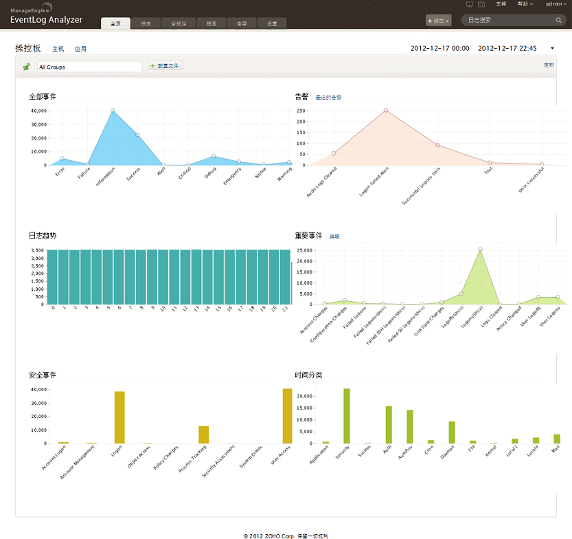
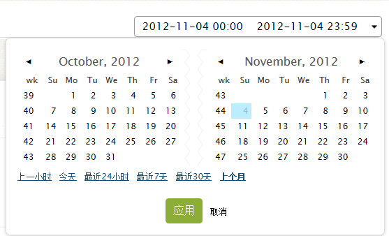
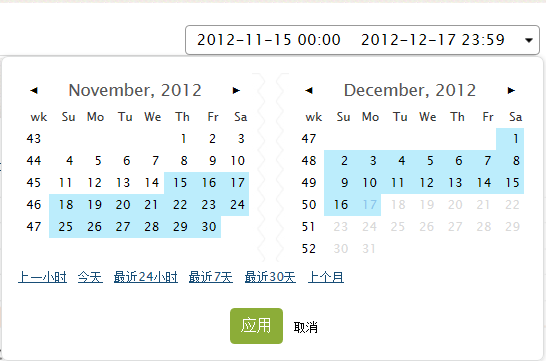
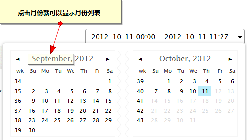
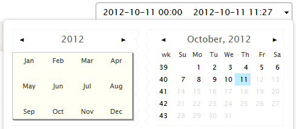
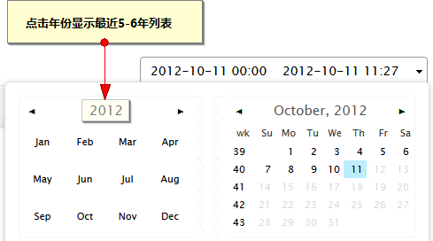
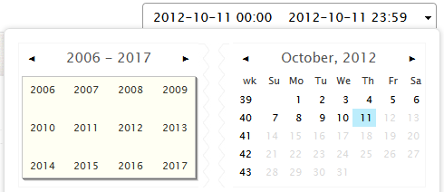

用户界面
通过支持的Web浏览器可以随时随地访问EventLog Analyzer用户界面。

- 下拉菜单按钮提供了添加主机、告警、报表和导入日志等功能。
- 搜索框用来进行快速搜索。
- 在评估版本中，页面的顶部提供了获取报价和购买的快速链接。对于注册用户，将在许可到期前10天显示提示信息。
- 在页面的右上角有两个图标，分别是EventLog Analyzer监听端口列表和syslog数据包查看器。
- 在帮助下拉菜单中，提供了升级许可、关于、用户指南和反馈等选项。
- 通过日历你可以选择显示数据的时间范围。
日历
在日历中选择仪表板图表、顺应性报表和告警等数据的范围。
如何使用日历？
选择单独的日期

-
这里是可以编辑的，用户可以手动输入时间范围。默认情况下，是从子夜到当前的时间。
-
双击来选中日期，就可以进行编辑。
-
可以选择预定义的时间范围：最近一小时、今天、最近24小时、最近7天、最近30天和上个月。
-
点击应用按钮来显示选择时间范围内的数据。
选择日期范围

-
点击选择开始日期。选择的日期显示在上面，如果需要，编辑时间。
-
点击选择结束日期。选择的日期显示在上面，如果需要，编辑时间。选择的日期范围将显示为高亮。
-
点击应用按钮来显示选择时间范围内的数据。
快速选择月份


快速选择年份


|